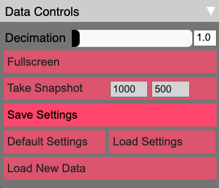

Data controls¶
Upon startup this sub-panel will be collapsed. Click on the downward facing arrow on the right side to expand the sub-panel, as shown in the image above.
Decimation¶
At the top of the data controls sub-panel is the Decimation slider and text entry box. Larger values of decimation causes less particles to be drawn by the corresponding factor (i.e. a decimation value of 10 will only plot 10% of the data. The minimum value is 1.).
Fullscreen¶
Click on the Fullscreen button to resize the window into fullscreen mode. Use the escape key to go back to the previous view.
Take Snapshot¶
This button will take a snapshot of the current view (without the Controls panel). There are two text boxes with numbers that you can change which default to the dimensions of the current Firefly canvas (here showing 1920, 1200). These define the width and height, respectively of the snapshot. When you click this button, you should be prompted to download the snapshot as a png file. This feature may work best in Firefox.
Save Settings¶
This button will save a file named “preset.json” to your computer. This preset file contains all the information needed to restart Firefly from the current configuration. In some browsers, this file will be downloaded automatically to your Downloads folder. You can move this file wherever you want, and rename it (but do not change its contents.)
Default Settings¶
Click this button to reset all values to the defaults that were used when Firefly was launched.
Load Settings¶
Click this button to reset all values to a preset file that you either created with the Python reader (see the API Reference), or by clicking the Save Settings button. When you click Load Settings, you will be prompted to locate a preset file on your computer. Once you select it, Firefly will reset to the configuration saved in the preset file.
Load New Data¶
Click this button to select a new data set to display in Firefly.
Once clicked, you will be prompted to select a directory on your
computer using your operating system’s standard file browser.
The directory should contain the json files produced by a
Firefly.data_reader.Reader object.
Warning
For most browsers, for security reasons only sub-directories of the current site are accessible (otherwise websites on the internet could read your personal files). As a result, Firefly can only parse data files that are within its static/data directory. See Managing multiple datasets for more details.
See also
As a result of the above, this only works if you are hosting the Firefly webserver locally. See Hosting Firefly locally for more details.
Note
After you select the directory, some browsers may show a default warning message that you are about to upload many files to the site and to only do so if you trust the site. You are only uploading the data to you browser, not to any online repository (even if you are using an instance of Firefly hosted on the internet).